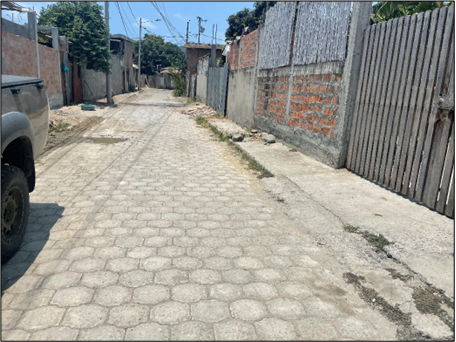
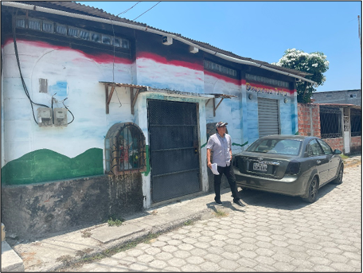
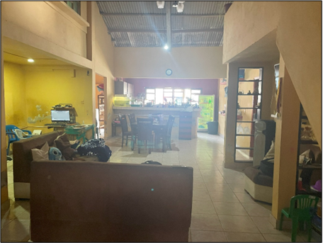
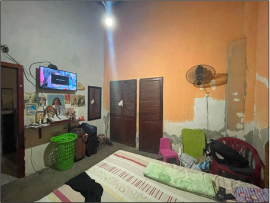
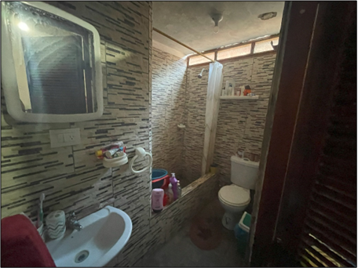
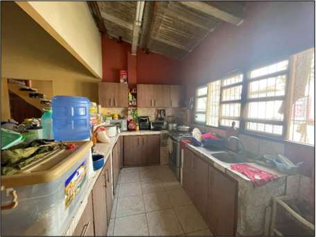
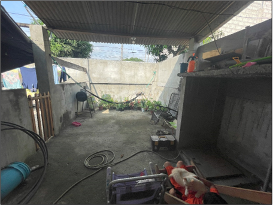
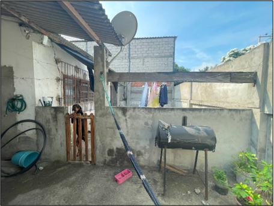
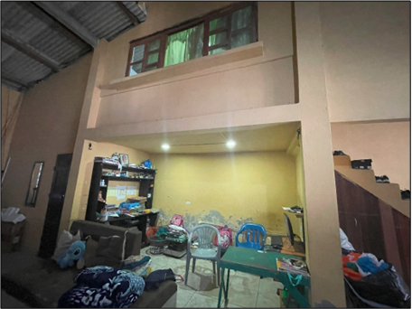

← volver al mapa
Casa - EC-RJ-155850
EC-RJ-155850 · casa · SUCRE, Manabi
★ Oferta destacada









Datos del remate
| Avalúo pericial | $38,178 |
| Tipo de bien | casa |
| Área de construcción | 146.18 m² |
| Área de terreno | 191.36 m² |
| Cantón / Provincia | SUCRE, Manabi |
| Dirección / Sector | MARIANA DE JESUS |
| Señalamiento | Otro Señalamiento |
| Fecha de remate | 2026-08-31 |
| No. de proceso | 13336201800218 |
Análisis vs. mercado
| Avalúo por m² | $261/m² |
| Mediana de mercado en la zona | $757/m² |
| Descuento vs. mercado | 65.5% |
| Comparables usados | 38 |
| Radio de búsqueda | 2000 m |
| Puntaje | 92/100 |
Descripción completa del avalúo
el inmueble se trata de un lote de terreno y construcción ubicado en la parroquia leonidas plaza del cantón sucre, ubicado a 100 metros aproximdamente del cuerpo de bomberos de la parroquia. cuenta con un área de terreno de 191,36 m2 y un área de construcción de 146,18 m2. la propiedad es medianera y se encuentra adosada en sus linderos laterales.la vivienda es de estructura de hormigón armado con cubierta de estrucutra de madera y eternit. cuenta con un área de local comercial en su lindero frontal. posee dos niveles, en planta baja se tiene domitorio principal, dormitorio 1, baño social, cocina, comedor, sala de tv, lavandería, patio; el segundo nivel son dos dormitorios con escaleras independientes.la vivienda cuenta con acabados de construcción, recubrimiento de cerámica en pisos, paredes enlucidas y pintadas, puertas de madera, ventanas de madera y vidrio, recubrimiento de cerámica en mesón de cocina, recubrimiento de cerámica en paredes y piso de baño.
Análisis de inversión (IA)
★ Buena oportunidadCon un descuento del 65.5% sobre la mediana de mercado calculado sobre 38 comparables, el precio es llamativamente bajo para una propiedad con construcción de dos niveles, acabados completos y local comercial en planta baja. La ubicación en Leonidas Plaza, cantón Sucre, Manabí, es zona rural-intermedia, lo que explica parte del descuento, pero la brecha sigue siendo significativa. Vale la pena investigar a fondo antes de descartar.
A favor:
- Descuento del 65.5% sobre mediana de mercado con base sólida de 38 comparables, lo que le da peso estadístico al cálculo
- Propiedad de dos niveles con 146.18 m² de construcción sobre 191.36 m² de terreno, buena relación construcción/terreno
- Estructura de hormigón armado, lo cual es positivo en zona costera/sísmica como Manabí
- Acabados funcionales y completos: cerámica en pisos y baños, paredes enlucidas, carpintería instalada
- Local comercial en lindero frontal representa potencial de renta o uso mixto
- Distribución amplia: dormitorio principal, dos dormitorios adicionales, baño social, cocina, comedor, sala, lavandería y patio
- Referencia de ubicación clara (100 metros del cuerpo de bomberos de la parroquia), fácil de verificar en sitio
En contra:
- Ubicación en parroquia Leonidas Plaza, cantón Sucre, Manabí: mercado con menor liquidez que ciudades principales, puede ser difícil revender rápido
- Cubierta de madera y eternit (fibrocemento) en lugar de losa: menor durabilidad y posible contenido de asbesto en planchas antiguas de eternit, requiere inspección
- Propiedad medianera adosada en ambos linderos laterales: sin ventilación lateral, depende de vecinos para mantenimiento de medianeras
- Avalúo pericial de $38,177.54 es bajo en términos absolutos, lo que puede reflejar limitaciones reales del mercado local
Riesgos a verificar:
- Cubierta de eternit: si es material antiguo puede contener asbesto; verificar año de instalación y estado físico de las planchas antes de cualquier compromiso
- Al ser remate judicial, verificar si la propiedad está ocupada por el deudor o terceros, lo que puede complicar la posesión efectiva
- Revisar gravámenes, hipotecas adicionales o embargos que no se extinguen automáticamente con el remate según el proceso específico
- Segundo nivel con 'escaleras independientes' es una descripción inusual; confirmar si esa área tiene acceso desde el interior o es una unidad separada de facto, lo que afecta titularidad y uso
- Local comercial en planta baja: verificar si está arrendado y si existe contrato vigente que obligue al nuevo propietario
- Zona costera de Manabí con historial sísmico (terremoto 2016); verificar que la estructura de hormigón armado no tenga daños estructurales no reparados o reforzados inadecuadamente
- Confirmar que el avalúo pericial es reciente y refleja el estado actual del inmueble, no una valoración previa al deterioro
Generado por IA a partir de la descripción — no es asesoría legal ni financiera.
Esta ficha es una copia de lo publicado en el sitio oficial de remates
judiciales de la Función Judicial del Ecuador, para consulta — no
reemplaza el expediente judicial. remates.funcionjudicial.gob.ec no da
un link propio por remate, por eso se generó esta página aparte.
Antes de ofertar, el expediente debe revisarlo un abogado.